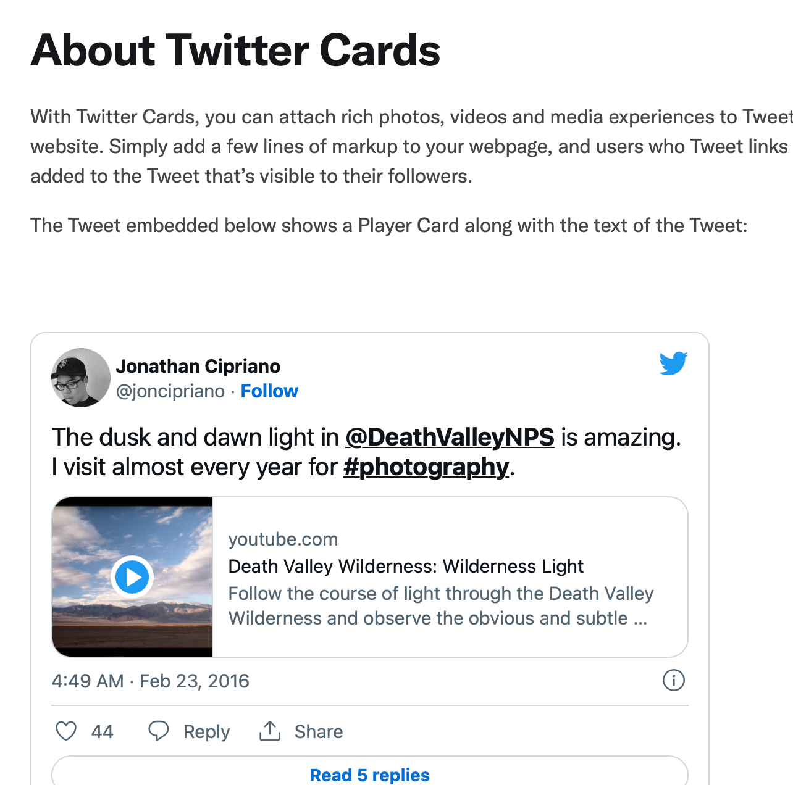
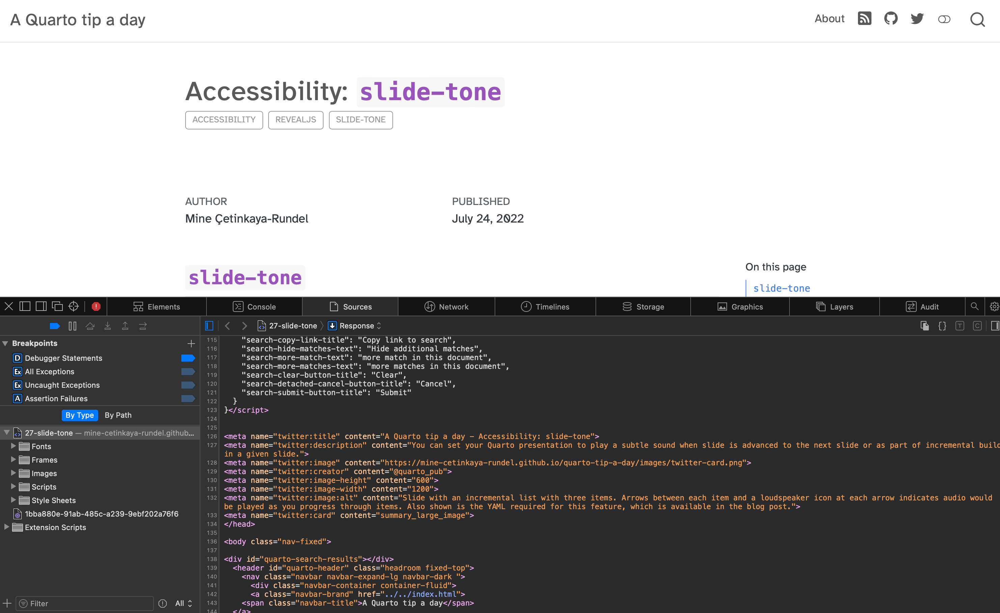
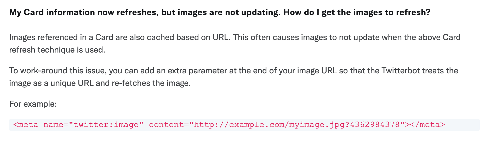
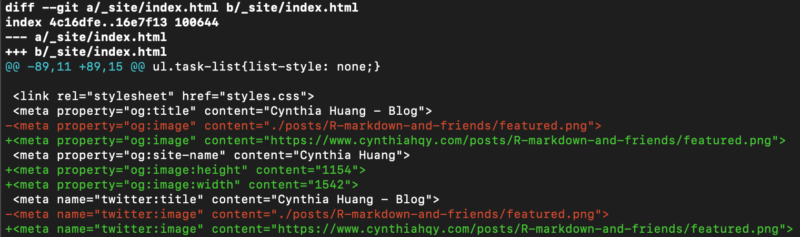

So, I just spent an hour preparing the tweet for my latest blog post1. Why? Because I wanted the tweet to show a preview of the blog post, but no matter how many times I copy and pasted the link, no preview appeared. Thus, I had no choice but to go down the rabbit hole of trying to Google how to do something without knowing what that thing is called…
Twitter Cards?
I started by searching blogdown image default, because:
- there’s way more Blogdown content out in the wild than Quarto (for now..) and,
- my mission started from a stubborn (and not at all time-efficient) refusal to separately upload the thumbnail image of my blog post to Twitter.
Unfortunately, this search yielded nothing useful… so I resorted to snooping the .html source code and Github repo of the wonderful A quarto tip a day website:

I managed to eventually work out that the preview things I wanted to make appear were called Twitter Cards. So I turned them on… or so I thought. I edited my Quarto project metadata (_quarto.yml), pushed the changes to my GitHub repo, refreshed my Netlify hosted website multiple times, but still no Twitter Card…
Resources and References
A quick reference for the social metadata options can be found in the Reference/Projects/Websites section of the Quarto official docs, but the examples in Guide/Websites/Social Metadata are much easier to understand.
The Getting started with Cards guide on the Twitter Developer Platform helped me understand the difference between the site: and creator: YAML options. Basically, use site: for “Website Attribution” of the publisher (e.g."@nytimes"), and creator for the individual user who created the content inside the card (e.g. "@cynthiahqy").
Make your own Quarto Blog
If you are interested in using Quarto to make your own blog, a good place to start is Bea Milz’s blog post Creating a blog with Quarto in 10 steps.
Epilogue
- Debugging: https://developer.twitter.com/en/docs/twitter-for-websites/cards/guides/troubleshooting-cards#missing_text
- Tried changing the image multiple times BUT the link was the same because I used
featured.png, i.e. Twitter didn’t re-fetch the image

Social Metadata Options!
Long story short2, I needed to do BOTH of the following:
_quarto.yml:You can publish your website without including the
site-url:option (I know because I did that), butquarto renderwon’t producerobots.txtorsitemap.xmlfor you, and your image links won’t be properly prepended:
_quarto.ymlQuarto very helpfully includes tools for generating the metadata required by Twitter to generate preview cards. However, you need to turn those tools on: